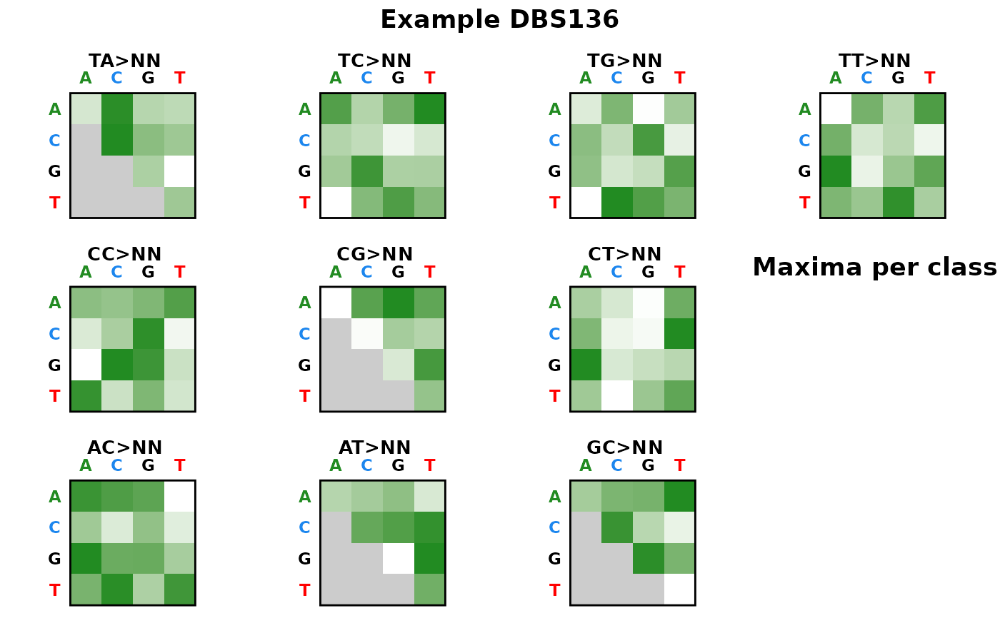
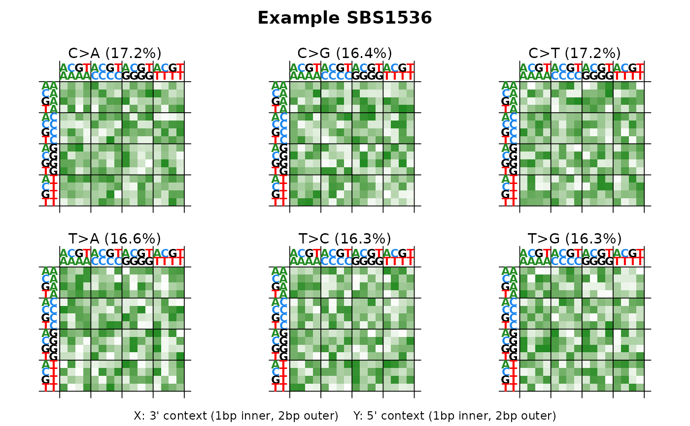

plot_DBS136, plot_DBS136_pdf, plot_SBS1536, plot_SBS1536_pdf
Source:R/plot_DBS136.R, R/plot_DBS136_pdf.R, R/plot_SBS1536.R, and 1 more
heatmap_plots.RdPlot functions for SBS and DBS mutational signature catalogs as heatmaps. Plot functions return patchwork objects (composites of ggplot2 panels).
Usage
plot_DBS136(
catalog,
plot_title = NULL,
base_size = 11,
plot_title_cex = 1.2,
axis_text_cex = 0.8,
strip_text_cex = 1,
show_axis_text_x = TRUE,
show_axis_text_y = TRUE,
show_axis_title_x = TRUE,
show_axis_title_y = TRUE
)
plot_DBS136_pdf(catalog, filename, ...)
plot_SBS1536(
catalog,
plot_title = NULL,
base_size = 11,
plot_title_cex = 1.2,
axis_text_cex = 0.8,
strip_text_cex = 1,
show_axis_text_x = TRUE,
show_axis_text_y = TRUE,
show_axis_title_x = TRUE,
show_axis_title_y = TRUE
)
plot_SBS1536_pdf(catalog, filename, ...)Arguments
- catalog
Numeric vector, single-column data.frame, matrix, tibble, or data.table. If there are row names (or for a vector, names), they will be checked against
catalog_row_order().- plot_title
Character. Title displayed above the plot.
- base_size
Numeric. Base font size in points.
- plot_title_cex
Numeric. Multiplier for the plot title size.
- axis_text_cex
Numeric. Multiplier for axis label size.
- strip_text_cex
Numeric. Multiplier for panel/facet label size.
- show_axis_text_x
Logical. If FALSE, hide x-axis base labels.
- show_axis_text_y
Logical. If FALSE, hide y-axis base labels.
- show_axis_title_x
Logical. If FALSE, hide the x-axis description.
- show_axis_title_y
Logical. If FALSE, hide the y-axis description.
- filename
Character. Path to the output PDF file (
_pdffunctions only).- ...
Additional arguments passed to the underlying plot function (
_pdfvariants only).
Value
Plot functions return a patchwork object (a composite of ggplot2
panels), or NULL with a warning if the catalog is invalid (wrong size or
row names). Note: adding ggplot2 layers with + (e.g. + ggtitle())
applies only to the last sub-plot, not the composite; use
patchwork::plot_annotation() for titles/captions on the whole
composition. PDF functions return NULL invisibly (called for side effect
of creating a PDF file), or stop with an error if the catalog is invalid.
Details
Functions in this family:
plot_SBS1536: SBS pentanucleotide context (1536 channels)plot_DBS136: DBS heatmap (136 channels, 10 4x4 panels)
Each has a corresponding _pdf() variant for multi-sample PDF export.
Examples
set.seed(1)
sig <- runif(136)
sig <- sig / sum(sig)
names(sig) <- catalog_row_order()$DBS136
plot_DBS136(sig, plot_title = "Example DBS136")

set.seed(1)
sig <- runif(1536)
sig <- sig / sum(sig)
names(sig) <- catalog_row_order()$SBS1536
plot_SBS1536(sig, plot_title = "Example SBS1536")
